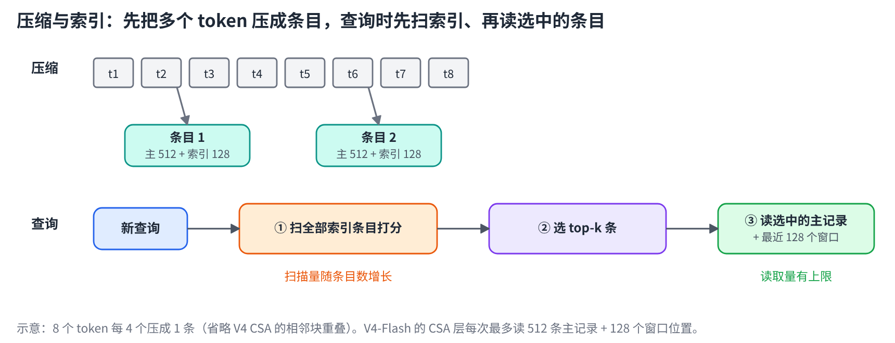
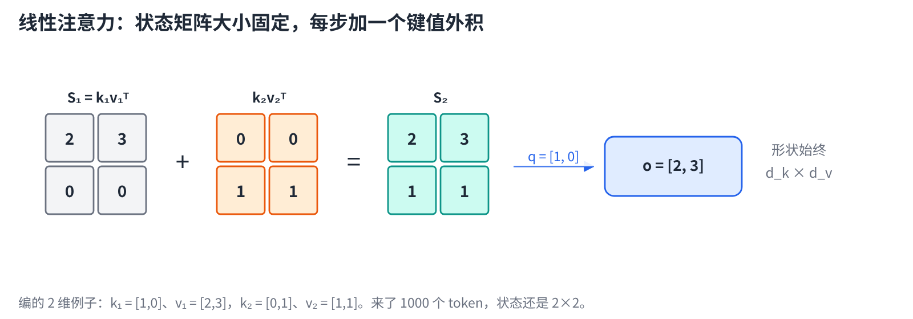
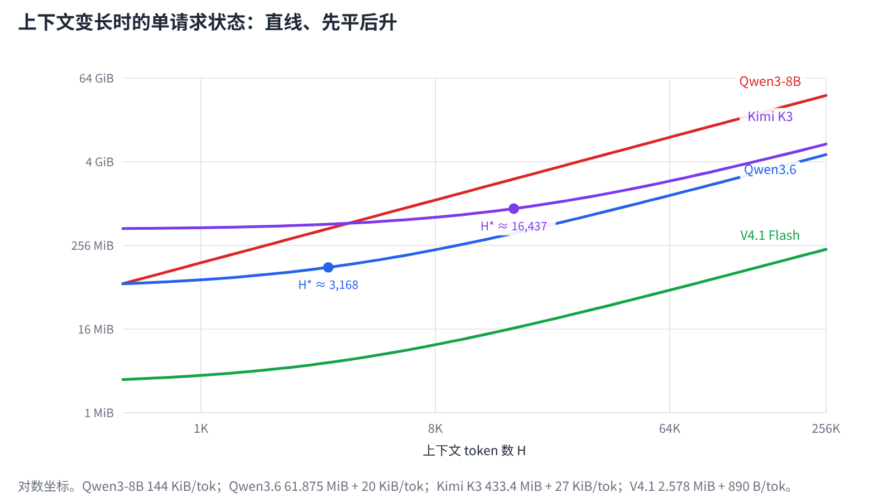
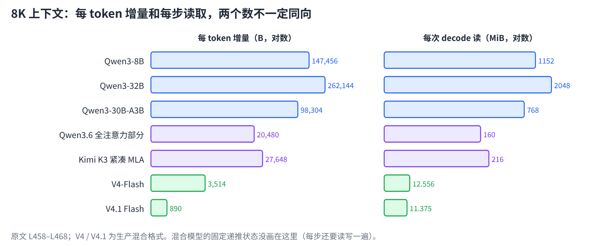
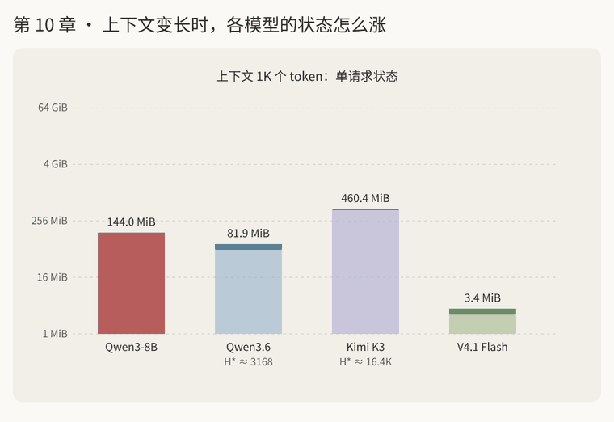

第 10 章 · KV 怎么变小 ②：窗口、稀疏、线性与混合注意力
本地运行
git clone https://github.com/wikieden/ai-infra-from-constraints
cd ai-infra-from-constraints/code/notebooks
pip install jupyterlab torch numpy
jupyter lab ch10_kv_sparse_linear.ipynb也可以下载后直接用 VS Code 打开 .ipynb 运行。需要 GPU 的章节在 Colab 里选「代码执行程序 → 更改运行时类型 → GPU」。
本章回答：不再给每个 token 都存一份、每步都全读，有哪些办法？局部窗口、压缩、稀疏索引、线性注意力各省了什么，又多了什么工作？混合模型的状态什么时候由"固定部分"说了算，什么时候由"随上下文增长的部分"说了算？
讲解日期：2026-11-24 · 上一章：第 09 章 KV 怎么变小 ① · 下一章：第 11 章 MoE
对应原文：materials/ai-infra-book/manuscripts/02-模型架构.md§2.3.3–§2.3.6 L358–L523（图 2-13 到 2-22，表 L458–L468）
本章缩写：BF16 = Brain Float 16（Google Brain 提出的 / 浮点 / 16 位）· CED = Causal Encoder-Decoder（因果 / 编码器 / 解码器）· CSA = Compressed Sparse Attention（压缩 / 稀疏 / 注意力）· FP32 / FP8 / FP4 = 32 / 8 / 4 位浮点 · HCA = Heavily Compressed Attention（高度 / 压缩 / 注意力）· KDA = Kimi Delta Attention（Kimi 的 / 增量修正 / 注意力）· KV = Key-Value（键 / 值）· MLA = Multi-head Latent Attention（多头 / 潜变量 / 注意力）· MoE = Mixture of Experts（混合 / 专家）· SWA = Sliding-Window Attention（滑动 / 窗口 / 注意力）。全部缩写见 缩写与术语表
上一章让每个 token 存得更瘦。本章改另外两个旋钮：存多少条（窗口、压缩、稀疏选择），以及根本不按 token 存（线性注意力的固定状态）。然后把它们组合成混合模型，算整个模型的状态。
讲解
第一步：窗口、压缩、索引：读最近的、读汇总的、先挑再读（2026-11-24）
类比：查资料的三种办法。 只看最近几页的笔记（窗口）；看每章写好的小结（压缩）；先翻目录挑出相关的章节，再去读那几章（索引选择）。翻目录本身也要花时间。
原文 L360–L364 区分三样东西：
| 对象 | 是什么 | 读的时候 |
|---|---|---|
| 局部滑动窗口（SWA） | 最近 128 个位置，较早的退出窗口 | 直接读 |
| 全局主 KV | 覆盖较长历史的长期表示，可能多个位置合成一条 | 不一定全读 |
| 索引 K | 用来检索的一份更小的表示 | 先用它给条目打分，选中的再去读主 KV |
DeepSeek V4-Flash（原文 L366–L372）：43 个主干层 = 2 个纯窗口层 + 21 个 CSA 层 + 20 个 HCA 层，窗口长 128。
| 层 | 怎么压缩 | 怎么读 |
|---|---|---|
| CSA（压缩稀疏） | 每 4 个 token 生成一条 512 维主记录 + 128 维索引 | 扫描全部索引，选最多 512 条主记录 + 窗口 |
| HCA（高度压缩） | 每 128 个 token 生成一条 | 读全部已完成的粗条目 + 窗口，不做 top-k |

图 10-1 · 上：8 个 token 压成 2 条记录（只示意数量关系，省略 V4 的重叠投影）。下：一次查询先扫描全部索引条目打分，再只读选中的主记录。
例子（原文 L372–L374，BF16 参考格式，\(S = 8192\)）：
| 一层 | 保存 | 每步读取 |
|---|---|---|
| CSA | 2048 条：主状态 2 MiB + 索引 0.5 MiB + 窗口 0.125 MiB | 索引扫描 0.5 MiB + 选中 ≤ 512 条 0.5 MiB + 窗口 0.125 MiB |
| HCA | 64 条：0.0625 MiB + 窗口 0.125 MiB | 全部 64 条 + 窗口 |
43 层合计：保存 59.125 MiB（另有约 11.6 MiB 的 FP32 压缩缓冲），最后一次查询读 27.625 MiB。对比 Qwen3-8B 同样 8K 要存、要读各 1152 MiB（第 08 章）。
注意节奏（原文 L384）：压缩块凑满才生成条目，CSA 每 4 个 token、HCA 每 128 个 token；没凑满的块要单独缓冲。
一句话：窗口管近期、压缩管远期、索引管挑选；省下的读取要和索引扫描、压缩器更新一起算。
第二步：线性注意力：一张固定大小的摘要卡（2026-11-24）
类比：第 09 章开头的"摘要卡"。 不管书多厚，卡片就那么大；每读一页就把要点改写进去。查的时候只看卡片。
公式（原文 L401）：键值外积累加成一个矩阵
- 外积 \(k_t v_t^{\mathsf T}\)：键向量的每个元素乘值向量的每个元素，得到一张 \(d_k \times d_v\) 的关联表。
- 状态永远是 \(d_k d_v\) 个数：新 token 改的是内容，不是大小。
例子（编的，\(d_k = d_v = 2\)）：\(k_1 = [1, 0]\)，\(v_1 = [2, 3]\)；\(k_2 = [0, 1]\)，\(v_2 = [1, 1]\)。
查询 \(q = [1, 0]\) 时，\(o = q^{\mathsf T}\mathcal{S}_2 = [2, 3]\)（正好取回了 \(v_1\)）。来了 1000 个 token，状态还是 2×2。

图 10-2 · 新的键、值做外积，加进旧状态；查询直接从状态读出结果。本图是最简单的累加；KDA 还加了门控与修正。
KDA（原文 L410–L412）：Kimi 的门控递推注意力，不只累加，还用当前键检验旧状态的预测、按误差写入修正（delta），衰减门决定旧信息留多少。
- Kimi K3 每个 KDA 层 96 个头，每头 128×128，FP32：\(96 \times 128 \times 128 \times 4\) 字节 = 6 MiB；69 层共 414 MiB。
- 每步 decode 读一遍、写一遍：828 MiB，不随上下文长度变化。短上下文时这是一笔显著的固定开销，长上下文时则避免了"越长读越多"。
一句话：线性注意力把上下文压进固定大小的矩阵，存储和每步读写都不随长度增长，但每一步都要整块读写一遍。
第三步：混合模型：固定部分 + 随上下文增长的部分（2026-11-24）
类比：手机套餐。 月租固定（递推状态），流量按用量算（逐 token 的全局 KV）。用得少时主要付月租，用得多时主要付流量；两者相等的那个用量是分界点。
公式（原文 L441）：
例子（原文 L420–L444）：
| 模型 | 结构 | \(M_{\mathrm{fixed}}\) | \(c_{\mathrm{state}}\) | \(H_*\) | 8K 时总状态 |
|---|---|---|---|---|---|
| Qwen3.6-35B-A3B | 30 个线性注意力层 + 10 个完整注意力层 | 61.875 MiB | 20 KiB / token | 3168 | 221.9 MiB |
| Kimi K3 | 69 个 KDA 层 + 24 个 MLA 层（紧凑） | 约 433.4 MiB | 27 KiB / token | 约 16.4K | 约 649.4 MiB |
| Qwen3-8B（对照） | 36 个 GQA 层 | 0 | 144 KiB / token | — | 1152 MiB |

图 10-3 · 横纵轴都是对数刻度。Qwen3-8B 一路按 144 KiB 增长；Qwen3.6、Kimi K3 先由固定状态撑着，过了 \(H_*\) 才由逐 token 部分主导。
- 低于 \(H_*\)：缩短上下文省得不多，固定部分占大头。
- 远高于 \(H_*\)：减小每个 token 的表示宽度更有效。
一句话：混合模型的状态 = 月租 + 按量；\(H_* = M_{\mathrm{fixed}} / c_{\mathrm{state}}\) 是两者相等的上下文长度。
第四步：每个 token 存多少，每次 decode 读多少（2026-11-24）
类比：比较几种存储方案，要同时看三个数：平均每页多占多少空间、存满一本书一共多大、每次查一次要翻多少页。只看其中一个会误判。
原文 L454：同时给出三个量，每 token 平均增量、长度为 \(N\) 时实际保存、一次 decode 要读的历史。
表（原文 L458–L468，\(N = 8192\)，单请求）：
| 模型与缓存路径 | 每 token 增量（B） | 8K 全局历史（MiB） | 每次 decode 读（MiB） |
|---|---|---|---|
| Qwen3-8B，BF16 GQA | 147,456 | 1,152 | 1,152 |
| Qwen3-32B，BF16 GQA | 262,144 | 2,048 | 2,048 |
| Qwen3-30B-A3B，BF16 GQA | 98,304 | 768 | 768 |
| Qwen3-235B-A22B，BF16 GQA | 192,512 | 1,504 | 1,504 |
| Qwen3.6，BF16 全注意力部分 | 20,480 | 160 | 160 |
| Kimi K3，BF16 紧凑 MLA | 27,648 | 216 | 216 |
| DeepSeek V4-Flash，生产混合格式 | 3,514.25 | 27.455 | 12.556 |
| DeepSeek V4.1 Flash，生产混合格式 | 890 | 6.953 | 11.375 |
混合模型还要加上第三步的固定状态（每步还要读写一遍）。
V4.1 Flash：跨层共享（原文 L476–L512）：
- CED 把 40 层分成前 20 层因果编码器、后 20 层解码器（第 06 章第六步提过）。
- 只有 4 层有自己的全局 KV：第 2、8、14 层每 2 个 token 一条，第 20 层每个 token 一条，其他层共用。
- 每条主记录 FP4：\(512/2 + 512/16 = 288\) 字节；索引 \(128/2 + 128/32 = 68\) 字节。
相差约 3.95 倍。V4.1 没有提高压缩比，而是靠跨层共享 + 更低精度省空间。
共享以后还要读（原文 L512–L518）：V4.1 的 38 个全局注意力层分成 4 个 Full（完整扫描、选择）、4 个 Reindex（在候选池里重选 512 条）、30 个 Reuse（直接复用选择）。8K 时 V4.1 每步读 11.375 MiB，和 V4 的 12.556 MiB 接近：跨层共享主要省的是保存，不是读取。

图 10-4 · 左：每 token 平均增量（对数刻度）。右：一次 decode 要读的历史。V4.1 存得比 V4 少约 4 倍，读得只少约 10%。
场景代码：Hugging Face 模型的 config.json 里能直接看出用的是哪种注意力（以 Qwen3.6 这类混合模型为例，字段名以模型自己的配置为准）：
from transformers import AutoConfig
cfg = AutoConfig.from_pretrained("Qwen/Qwen3-8B")
print(cfg.num_hidden_layers, cfg.num_attention_heads, cfg.num_key_value_heads, cfg.head_dim) # 36 32 8 128
kv_per_token = 2 * cfg.num_hidden_layers * cfg.num_key_value_heads * cfg.head_dim * 2 # BF16
print(kv_per_token) # 147456
# 混合模型常见的字段：layer_types（每层是 linear_attention 还是 full_attention）、sliding_window 等
print(getattr(cfg, "layer_types", None), getattr(cfg, "sliding_window", None))
一句话：比较上下文成本要同时看三个数：每 token 增量、实际保存、每步读取；跨层共享省保存，稀疏选择省读取，递推状态把两者都变成常数但每步都要读写。
动画演示：上下文变长时，各模型的状态怎么涨

可交互版：animations/10-kv-sparse-linear.html（滑块：上下文长度，1K–128K，对数刻度）。
怎么看：
- 四根柱子：Qwen3-8B（全 GQA）、Qwen3.6（30 线性 + 10 完整）、Kimi K3（69 KDA + 24 MLA）、V4.1 Flash（890 B/token 的全局 KV，另加 2.578 MiB 窗口）；
- 每根柱子分成两段：浅色是固定部分，深色是随上下文增长的部分（第三步）；
- 播放时上下文从 1K 涨到 128K：Qwen3-8B 一路线性涨；Qwen3.6 过了 3168 才明显上涨；Kimi K3 到 16K 左右才由逐 token 部分主导；
- 右上角显示各模型的 \(H_*\)。
练习与作答记录
题 1（第一步）：V4-Flash 的一个 CSA 层，上下文 \(S = 4096\)。保存多少条压缩条目？索引扫描多少条？主注意力最多读多少条？按 BF16 参考格式，主状态和索引各多少 MiB？
作答记录：（待作答）
题 2（第二步）：一个假想模型 48 个递推层，每层 64 个头，每头状态 128×128，FP32。递推状态一共多大？每步 decode 读写多少？上下文从 8K 涨到 64K，这两个数变不变？
作答记录：（待作答）
题 3（第三步）：一个混合模型固定状态 100 MiB，每 token 增加 40 KiB。\(H_*\) 是多少？上下文 32K 时总状态多大，其中固定部分占多少？
作答记录：（待作答）
原书练习 2-4 后半（L390–L392：CSA 层上下文从 8192 增到 16384）、练习 2-5（L448–L450：Qwen3.6 与 Kimi K3 的交点、32K / 128K 总容量、256 MiB 预算）。想多练可以做。
口诀
近的看窗口，远的看小结，挑之前先翻目录；
摘要一张卡，读写都定额；
月租加流量，交点 H* 定谁说了算；
存的少不等于读的少，三个数一起看。
本章复习卡片
I34（窗口、压缩、索引三样东西）、I35（线性注意力的固定状态）、I36（混合模型的 \(H_*\)）、I37（比较上下文成本的三个数，V4.1 的跨层共享）。练习做完后，按答错、卡住的地方再补。
附录 · 延伸阅读
留给以后深入学习用，不影响本章主线。★ 是建议先读的。
推荐阅读
| 读什么 | 读哪里 | 读它为了什么 |
|---|---|---|
| ★ AII 第 2 章 | §2.3.3–§2.3.6 L358–L523 | 本章原文，图 2-13 到 2-22 和每 token 比较表 |
AII 计算结果 calculations/results/state-deepseek-v4-flash-n8192-b1-native.md |
全文（原文 L374 链接） | V4-Flash 8K 状态的逐项分解 |
AII 计算结果 calculations/results/kv-comparison-n8192-b1.md |
全文（原文 L470 链接） | 各模型每 token 增量与读取量的精确字节数 |
| DeepSeek V4.1 Flash 技术报告 | 第 2 节（CED、CSA2、候选池） | 跨层共享与分层选择的原始描述 |
| Katharopoulos 等, Transformers are RNNs（2020） | 第 3 节 | 线性注意力为什么等价于固定状态递推 |
| Kimi Linear / KDA 技术报告 | KDA 一节 | 门控与 delta 更新 |
数学原理
- 外积：\(k v^{\mathsf T}\) 是 \(d_k \times d_v\) 矩阵，第 \((i, j)\) 个元素是 \(k_i v_j\)。累加外积就是在一张固定大小的表里叠加"键—值"关联。
- 一次函数的交点：\(M_{\mathrm{fixed}} + cH\) 里两项相等时 \(H = M_{\mathrm{fixed}} / c\)。
- 向下取整：已完成的压缩条目数 \(\lfloor S / r \rfloor\)，\(r\) 是压缩比。
公式清单
| 公式 | 意思 |
|---|---|
| CSA 条目数 \(= \lfloor S / 4 \rfloor\)，HCA \(= \lfloor S / 128 \rfloor\) | V4-Flash 的压缩条目 |
| CSA 每步读 \(=\) 全部索引 \(+ \min(512, \text{条目数})\) 条主记录 \(+\) 窗口 | 先挑再读 |
| \(\mathcal{S}_t = \mathcal{S}_{t-1} + k_t v_t^{\mathsf T}\)，\(o_t = q_t^{\mathsf T}\mathcal{S}_t\) | 线性注意力 |
| 递推状态 \(= L \times n_h \times d_k \times d_v \times b\) | 不随上下文变 |
| \(M_{\mathrm{state}}(H) = M_{\mathrm{fixed}} + c_{\mathrm{state}} H\)，\(H_* = M_{\mathrm{fixed}} / c_{\mathrm{state}}\) | 混合模型 |
| V4.1：\((3/2 + 1)(288 + 68) = 890\) B/token | 跨层共享 + FP4 |
代码对照：把本章的数字用代码算一遍
纯 Python，不需要 GPU。代码在仓库本地
ai-infra/solutions/chapter-code/ch10_kv_sparse_linear.py，配套测试tests/test_ch10.py：
bash cd ai-infra/solutions/chapter-code uv run python ch10_kv_sparse_linear.py # 一步一步打印 uv run pytest tests/test_ch10.py
讲义 ↔ 代码：
| 讲义 | 公式 | 写法 | 跑出来 |
|---|---|---|---|
| 第一步 V4-Flash 8K | 逐层加 | v4_flash_state(8192) |
保存 59.125 MiB，读 27.625 MiB |
| 第二步 小例子 | 外积累加 | linear_attention([...]) |
\(\mathcal{S}_2 = [[2,3],[1,1]]\)，\(o = [2,3]\) |
| 第二步 Kimi K3 KDA | \(69 \times 96 \times 128^2 \times 4\) | recurrent_mib(69, 96, 128) |
414 MiB，读写 828 MiB |
| 第三步 交点 | \(M / c\) | h_star(61.875 * 2**20, 20 * 1024) |
3168 |
| 第四步 V4.1 / V4 | 两个式子 | v41_bytes_per_token()、v4_bytes_per_token() |
890、3514.25 |
关键几行：
def v4_flash_state(S, win=128, d=512, d_idx=128, b=2):
csa = S // 4; hca = S // 128; w = min(S, win)
keep = 43 * w * d * b + 21 * csa * (d + d_idx) * b + 20 * hca * d * b
read = 43 * w * d * b + 21 * (csa * d_idx + min(512, csa) * d) * b + 20 * hca * d * b
return keep / 2**20, read / 2**20 # MiB：窗口 + CSA + HCA
代码里才看得到的 3 件事：
v4_flash_state只算 BF16 参考格式；表里 V4-Flash 的 27.455 / 12.556 MiB 是生产混合格式（FP8/BF16 主记录 584 B、MXFP4 索引），数值接近但不是同一个量。- 压缩器的 FP32 缓冲（约 11.6 MiB）没算进
keep，和原文 59.125 MiB 的口径一致。 linear_attention的状态在循环里只有一个 2×2 列表，不管输入多长都不变大，这就是"固定状态"。
自己改一改（不影响练习答案）：
- 用
v4_flash_state扫 \(S\) = 1024、8192、65536，看保存和读取的比值怎么变。 - 给
linear_attention喂 1000 个随机 token，确认状态还是 2×2。 - 把
h_star的每 token 增量减半，看交点往哪边移。